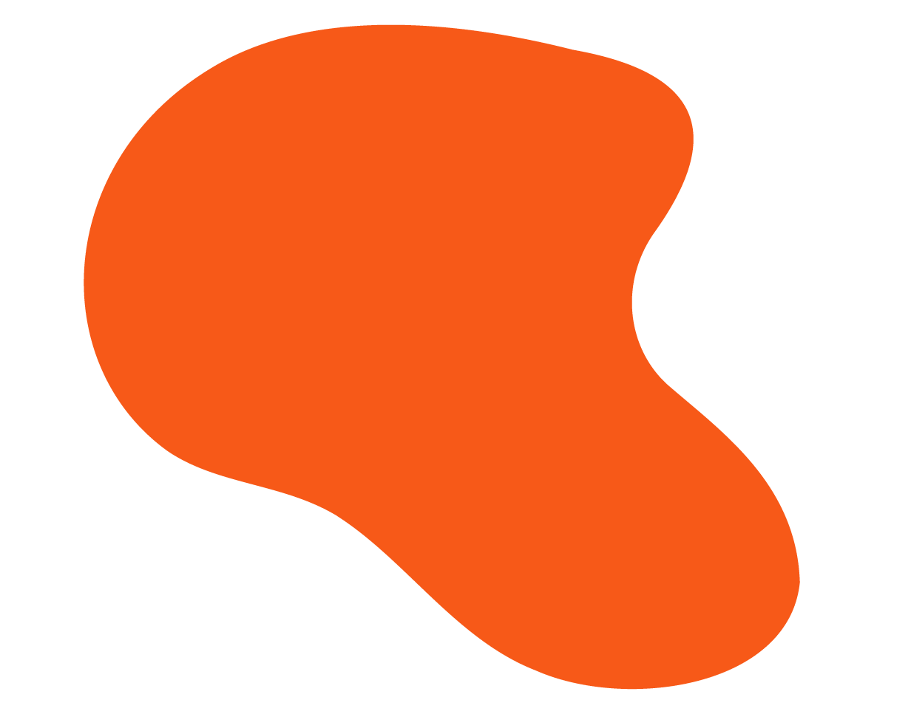
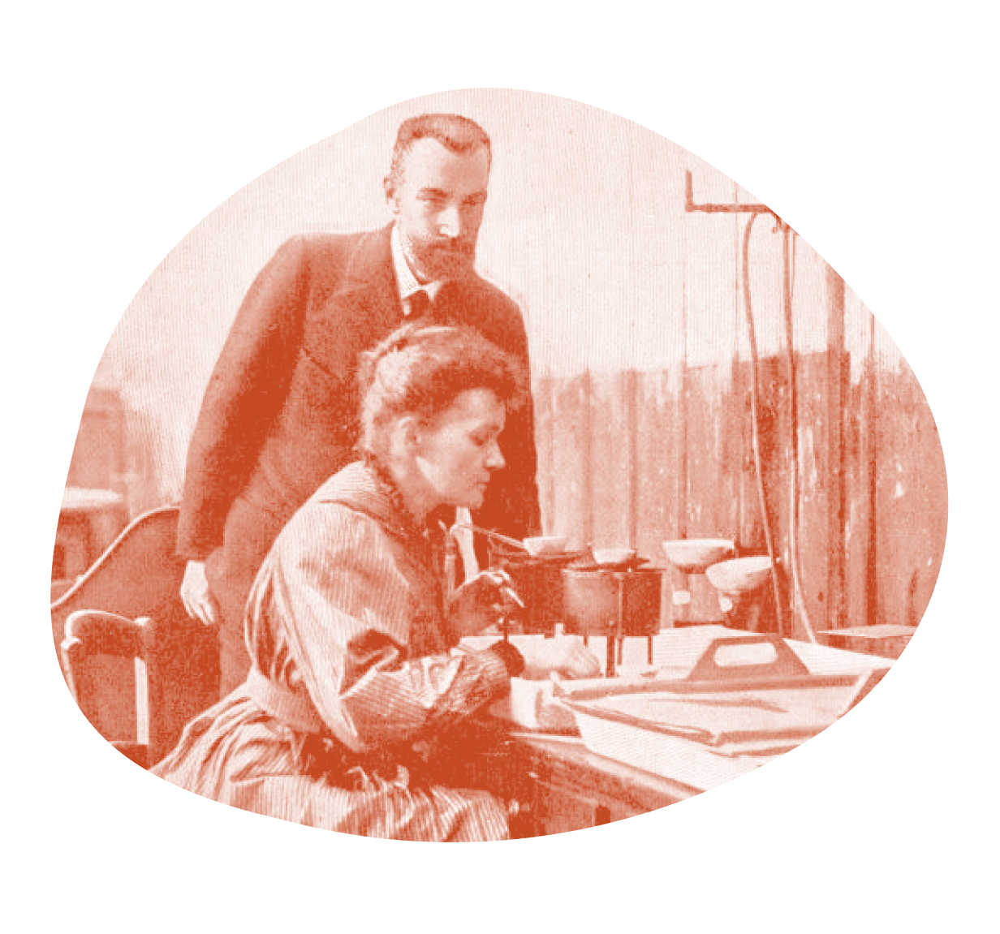
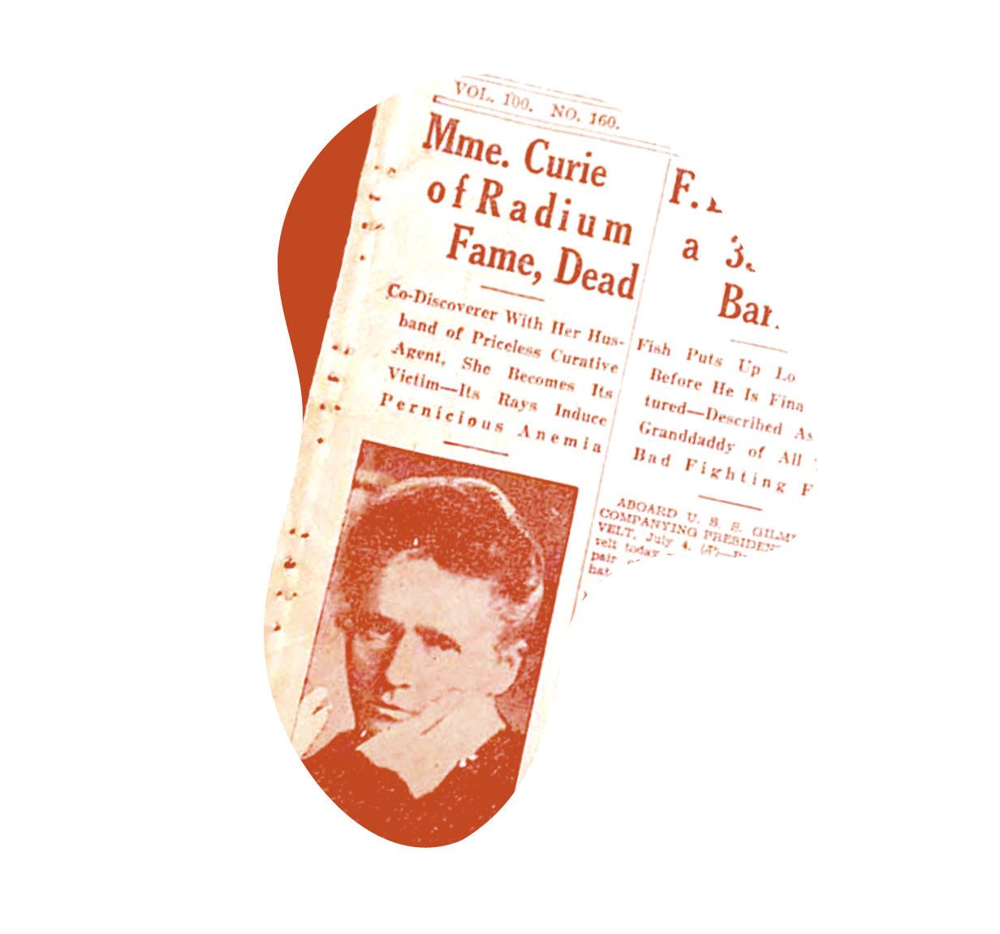

Marie
Curie
Maria Sklodowska, later known as Marie Curie, was born on November 7, 1867, in Warsaw (modern-day Poland). As a child, Curie took after her father. She had a bright and curious mind and excelled at school. Curie completed her master’s degree in physics in 1893 and earned another degree in mathematics the following year.


One of Marie Curie’s outstanding achievements was to have understood the need to accumulate intense radioactive sources, not only to treat illness but also to maintain an abundant supply for research in nuclear physics.

